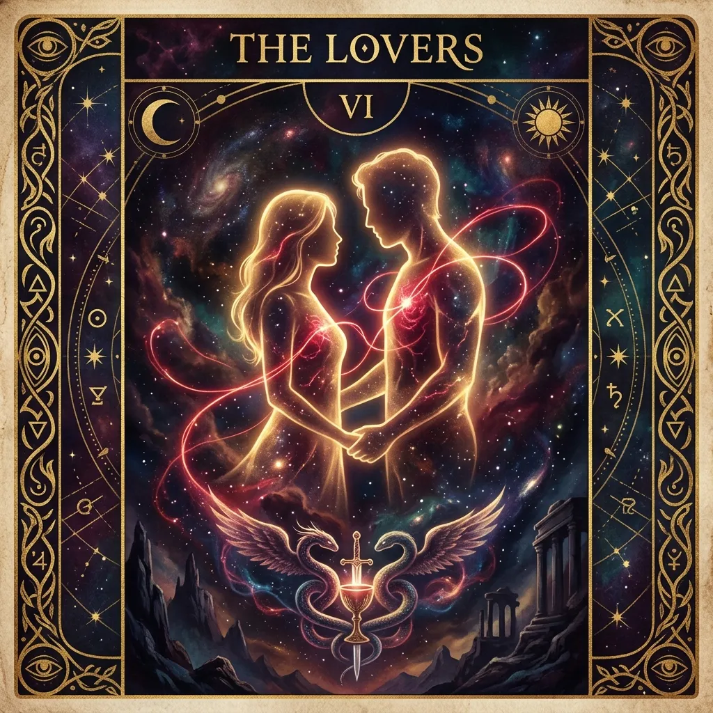

🕊️ Templo da Luz Amorosa · Desde 1977
Fazemos amarração amorosa de 3 a 7 dias para ter a pessoa amada de volta
Abra agora sua leitura: descubra sentimentos ocultos, terceira pessoa e o caminho espiritual para aproximar essa pessoa de você.
💌 +12.400 consulentes✍️ 100% Sigilosa★★★★★ 4,9/5
Sua Conexão Espiritual
Descubra o que sua pessoa amada sente, esconde ou ainda carrega por você
Responda a poucas perguntas para a taróloga abrir o campo amoroso correto. Leva menos de 1 minuto.
🔒 Sigilo sagrado absoluto✍️ Atendimento reservado🛡️ Garantia de 7 dias
🥹 "Quando recebi a leitura, entendi o silêncio dele e parei de me culpar. Foi como se as cartas tivessem colocado tudo na minha frente."

Como acontece o reencontro
🕯️
1. Abertura do Campo AmorosoVocê informa o nome dessa pessoa e a dúvida que mais aperta o seu coração.
✍️
2. O Recolhimento TarológicoMilena Medeiros abre as cartas no horário reservado e interpreta o campo amoroso de vocês.
💌
3. A Resposta das CartasA leitura amorosa é entregue com sinais sobre sentimentos, bloqueios, terceira pessoa e próximos passos.